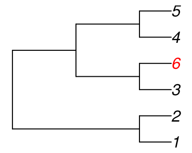

Interpreting large quartet distances
Martin R. Smith
2020-01-28
Source:vignettes/Critical-distances.Rmd
Critical-distances.RmdProperties of the quartet distance are explored fully in Steel (1993).
As quartet distances of 1 can only be accomplished for small trees (five or fewer leaves), it is perhaps more appropriate to consider whether or not trees are more dissimilar than a pair of random trees, whose distance will be, on average, \(\frac{2}{3}\).
Minimum quartet distance
When there are six or more tips in a bifurcating tree, some quartets are necessarily shared between trees.
Consider the tree:

The only trees with no quartets in common with Tree A are symmetric with

Now create Tree C by adding a 6th tip as a sister to tip 3 on Tree A.

There’s nowhere to add tip 6 to Tree B without creating a quartet that exists in Tree C.

Quartet distance in a pair of random trees
On average, \(\frac{1}{3}\) of the quartets resolved in a pair of random trees will match. This is because there are three quartets involving any set of four tips, each of which is equally likely to occur on a truly random tree.
The below code calculates the mean proportion of matching quartets for random trees with 4 to 20 tips, and the corresponding standard deviation.
round(vapply(4:20, function (n_tip) {
trees <- lapply(logical(56), function (X)
ape::rtree(n_tip, tip.label=seq_len(n_tip), br=NULL))
results <- QuartetStatus(trees)[1, ] / choose(n_tip, 4)
c(mean(results[-1]), sd(results[-1]))
}, double(2)), 3)## [,1] [,2] [,3] [,4] [,5] [,6] [,7] [,8] [,9] [,10] [,11] [,12]
## [1,] 0.333 0.333 0.333 0.333 0.333 0.333 0.333 0.333 0.333 0.333 0.333 0.333
## [2,] 0.516 0.516 0.516 0.516 0.516 0.516 0.516 0.516 0.516 0.516 0.516 0.516
## [,13] [,14] [,15] [,16] [,17]
## [1,] 0.333 0.333 0.333 0.333 0.333
## [2,] 0.516 0.516 0.516 0.516 0.516References
Steel, M. A., & Penny, D. (1993). Distributions of tree comparison metrics—some new results. Systematic Biology, 42(2), 126–141. doi: 10.1093/sysbio/42.2.126